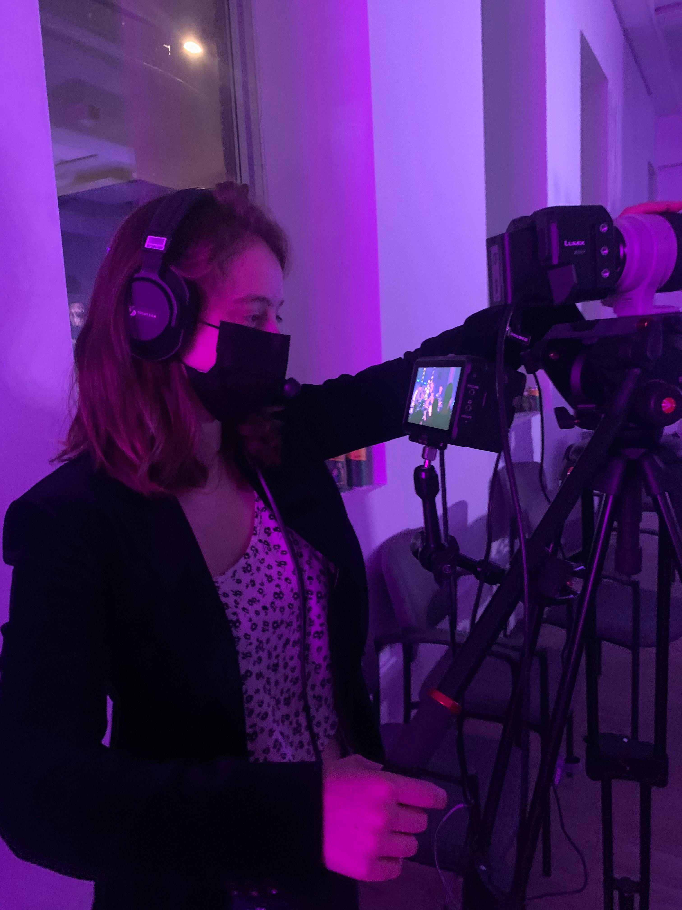
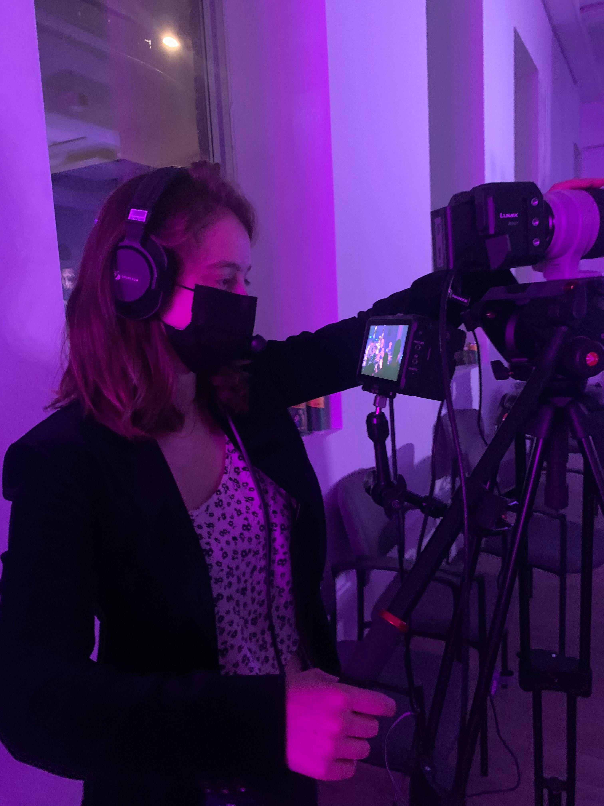

About
BIO
Vanille Debray is a songwriter and film-music composer based in Montreal. She writes orchestral soundtracks and produces indie-pop songs. A classically-trained pianist and vocalist, Vanille grew up in the south of France and moved to Montreal, where she obtained a Bachelor's of Music at McGill University in 2018, in music and Sound Recording. She has released multiple indie-folk and indie-pop songs, most recently an electro-pop EP, "Wild Card", released in July 2022.
EDUCATION
McGill University, Montreal
B.A. in Music and Music Technology
Subjects include:
- • Classical Music Theory
• Piano and Jazz Voice
• Video Production
- • Western Music History
• Digital Music Production
• Orchestration
Qualifying Year in Sound Recording
Subjects include:
- • Sound Recording
• Music Production
• Live Sound
- • Electroacoustics
• Electronics
• Music editing
Sep 2014 - April 2018
 
